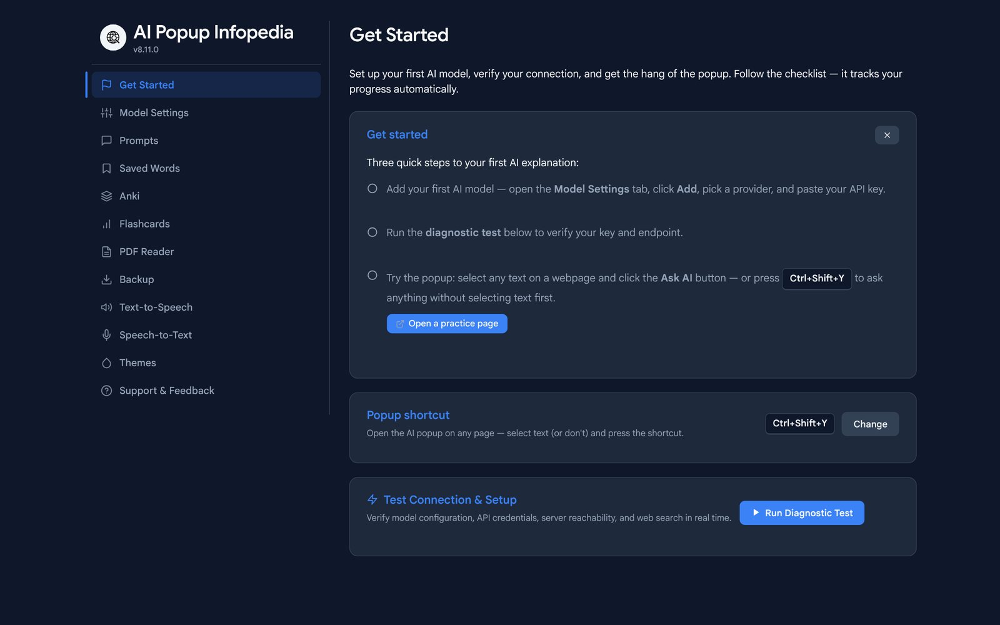
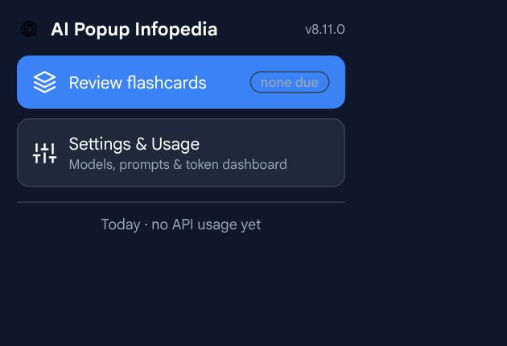

AI Popup Infopedia
How do you get a trustworthy explanation of a word without leaving the page you’re reading?
Chrome extension · Design, build, ship · JavaScript, pdf.js, PDFLib
What I designed
- Select, then understand. Highlight 1 to 6 words on any page or PDF and an explanation appears beside it. One shortcut opens an empty chat when nothing is selected.
- Quiet when right, loud when wrong. A second model checks each answer. A clean result is a small “Verified” badge; only a likely error opens a red box, with the corrections first.
- Onboarding that tracks itself. A three-step checklist on the settings page ticks off as people add a model, test it and try the popup.
- A reader, not just a viewer. A custom PDF viewer with highlights, notes, a focus mode and reading position that survives a restart.
- Remember what you looked up. Saved words become flashcards with spaced repetition, so lookups turn into learning.
What happened
Published on the Chrome Web Store and still shipping: version 8.11 went out in October 2026. I also built a React Native version for Android.

